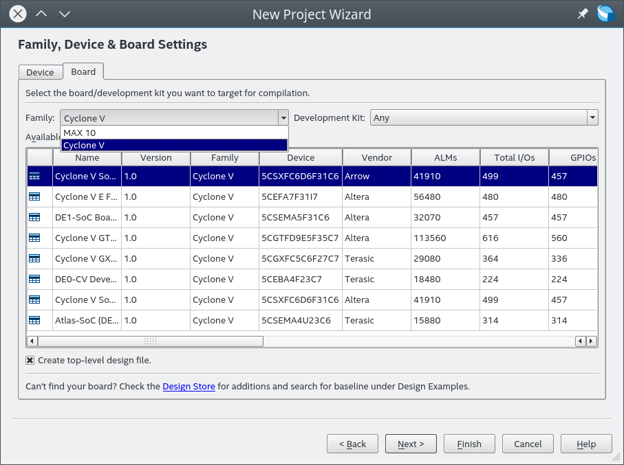

在 DE2-115 開發紀錄: 透過可程式邏輯控制 LED 閃爍 一文中我們透過指定 FPGA 型號等資訊來建立我們的專案，那是否可以像是選開發板這樣的方式來建立專案呢?
實際上，在建立新專案的時候，照理來講是可以在 Family, Device & Board Settings 選擇 DE2-115 的，但是由於 DE2-115 是在 Intel 購買 Altera 之前的板子，因此此項選可能已經被拔除了，在這一頁設定我們是找不到我們的開發板的。

那怎樣可以透過現成的樣板來建立我們的專案呢？ 這就是本篇文章要講的部份。
下載樣板
首先我們到 Design Store 去找尋 DE2-115 的樣板
點擊 Altera DE2-115 Development and Education Board
接下來會來到 這個頁面 ，問你到底是使用 NXP 的晶片還是 Cypress 的晶片，如果你不知道怎樣選擇的話，請先跳到 分辨 NXP 或是 Cypress 版本 去
我的設備使用的是 Cypress 的晶片，因此我選擇 DE2-115 Baseline Pinout for Cypress USB PHY 這組
在樣板下載頁面這邊，我們盡可能找符合我們自己使用的 Quartus 版本的樣板，在這邊我使用的 Quartus 是 18.0 ，但是上面卻沒有符合的版本，因此我選擇 16.0 這一個。
選好合適版本接下來就是下載啦，會下載到一個名為 DE2_115_CYPRESS_GOLDEN_TOP.par 或是 DE2_115_NXP_golden_top.par 的檔案
使用樣板檔
下載好 DE2_115_CYPRESS_GOLDEN_TOP.par 或是 DE2_115_NXP_golden_top.par 這樣的檔案後，來進行我們的安裝吧
首先建立一個新的專案，呼叫 File -> New Project Wizard
點選 Next >

接下來，在 Project Type 這頁，選擇 Project template ，點選 Next >
在這邊，由於我們還沒安裝我們的樣板檔案，因此是看不到 DE2-115 的，等安裝完成後以後建立新的專案就都看得到囉
點選 Install the design templaes

接下來，會有一個視窗讓我們選擇剛剛下載的 DE2_115_CYPRESS_GOLDEN_TOP.par 或是 DE2_115_NXP_golden_top.par 的位置，以及要安裝樣板檔到哪裡
好了以後點選 Ok 就會進行安裝，要是安裝的版本和當前 Quartus 不符合的話，會看到一個警告視窗，不理它
接下來，我們就可以發現到有 DE2-115 Baseline Pinout for Cypress USB PHY 可以選擇了
樣板檔做了什麼
那到底為什麼要使用樣板檔呢? 在 DE2-115 開發紀錄: 透過可程式邏輯控制 LED 閃爍 我們只設定了四個輸出腳與一個輸入腳和 FPGA 的對應，要是今天要對應很多的時候，不是會弄到頭昏嘛?
樣板檔最大的好處，就是已經幫我們將腳位的預設名稱設計好了，點選 Assignments -> Pin Planner 看看
包含腳位的 Node Name 與對應的 Location 都指定好囉，除此之外，還有一個預設的 DE2_115_GOLDEN_TOP.v 也幫我們建立了，可以看到裡面的 I/O 就是對應到 Pin Planner 的這些 Node name, 這樣以後開發就輕鬆多囉~
分辨 NXP 或是 Cypress 版本
那麼到底要怎樣分辨我們自己的 DE2-115 到底是使用 NXP 還是 Cypress 晶片呢? 其實答案如下圖
根據圖片的位置，只要你的晶片型號還在的話，應該可以看出到底是使用 Cypress 還是 NXP 的晶片。
(筆者自己的 DE2-115 是採用 Cypress CY7C67200 晶片)
那… 選錯了會怎樣呢? 由於該晶片控制的是 USB host/device, 所以你作出來的 DE2-115 專案大概會發現到 USB Host/device 不能用吧… (think)